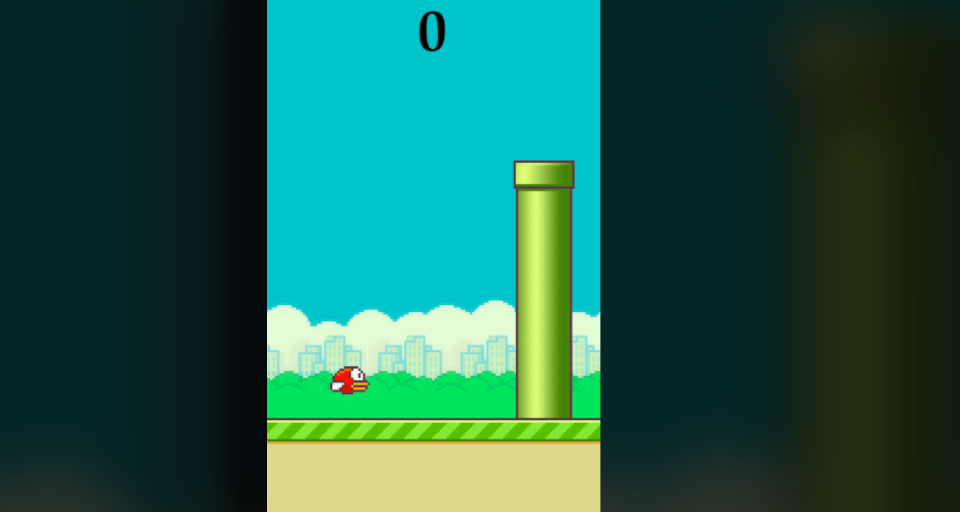

Flappy Bird
A game made using python
"One of my favourite game is Flappy bird "
— Debarpan Middya, creator of Falppy Bird.


Created by Debarpan Middya
Download and Install
Version 1.0 released 1 February 2022
Please read the Privacy Policy